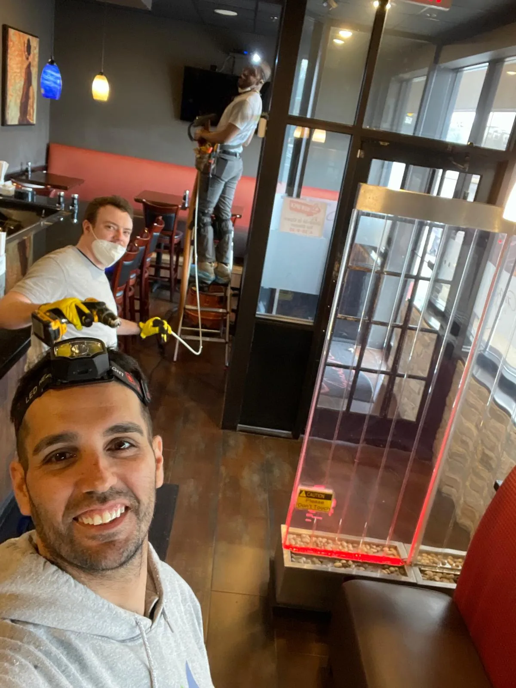

What Drives the Quote
- Number of rooftop units, air handlers, and major duct runs
- Type of facility, occupied schedule, and cleaning windows available
- Scope of standard HVAC versus specialty exhaust or grease-heavy systems
Professional HVAC cleaning for Nassau County offices, restaurants, retail spaces, and commercial buildings.
Commercial buildings accumulate dust, allergens, and contaminants faster than residential homes. Higher occupancy, heavier HVAC usage, and commercial cooking environments put constant strain on ductwork. Without regular cleaning, indoor air quality drops, energy costs rise, and health complaints increase.
Our commercial duct cleaning services are designed for the unique demands of business environments. We use industrial-grade equipment and work around your schedule to minimize disruption to your operations.
Regular duct cleaning helps commercial properties meet indoor air quality standards and pass health inspections. Restaurants and food service businesses are especially subject to HVAC cleanliness requirements. We provide documentation that can be used for inspections and compliance records.
Call (516) 324-8078 for a Free Commercial Quote
Pricing Guidance
Commercial duct cleaning is built from a site walkthrough because square footage alone does not tell you how many units, duct runs, or access constraints are involved.
We price commercial work from an approved scope, so your team knows exactly what is covered before mobilization.
For a firm commercial number, call (516) 324-8078 or request a free estimate and we will build the quote from your building layout, schedule, and documentation requirements.
Service Questions
We work with offices, restaurants, retail spaces, medical and dental offices, schools, daycares, property-managed buildings, and other commercial facilities across Nassau County.
Yes. We offer nights, weekends, and off-hour scheduling when needed to reduce disruption to staff, customers, and tenants.
Yes. We can provide before-and-after photos, completion reporting, and scope documentation that property managers or compliance teams may need.
Schedule a commercial duct cleaning and see the difference clean air makes for your business.